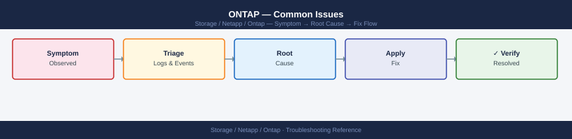

ONTAP — Common Issues¶

Diagnostic Flow¶
Before you begin¶
- Access: Storage admin credentials (cluster admin or equivalent)
- Gather first: recent error message text, event timestamps, and affected object names
- Scope: confirm whether the issue affects a single object, host, cluster, or site
- Escalation: open a vendor support ticket before running any destructive step
- Logging: document each command and output — required if escalation is needed
Incident Triage Decision Tree¶
Quick Reference¶
| Symptom | Likely Cause | Action |
|---|---|---|
| Volume full / write errors to hosts | Volume space exhausted; autogrow not configured or hit max | volume show -fields used-percent,autosize-mode; increase max-autosize or delete old snapshots with snapshot delete |
| Aggregate nearly full (>90%) | Thin-provisioned volumes grew beyond aggregate free space | storage aggregate show; move volumes with volume move start or reduce snapshot reserves |
| SnapMirror lag exceeding RPO | Network bandwidth contention, dedupe/SnapMirror scheduling conflict, or throttle active | snapmirror show -fields lag-time,transfer-bytes; adjust schedule; check snapmirror config-replication show |
| NFS mount hangs after SP takeover | Stale NFS lock; automount not recovering after LIF migration | Verify LIF on correct port: network interface show; unmount and remount on client; check NFS grace period |
| iSCSI session dropped | LIF failover changed IP; host iSCSI initiator did not reconnect | iscsi session show; confirm LIF IP stability; rescan iSCSI on host; verify multipath (multipath -ll on Linux) |
| Node takeover not auto-triggering | Storage failover disabled or partner unreachable | storage failover show; check cluster interconnect with cluster ping-cluster -node <node>; verify options cf.mode |
| SMB/CIFS shares inaccessible | CIFS server stopped or Kerberos ticket issue with Active Directory | vserver cifs show; vserver cifs domain info -vserver <svm>; verify AD connectivity and DNS resolution |
| Slow NFS performance | Jumbo frames not configured end-to-end, or QoS ceiling throttling workload | Check MTU on ONTAP ports (network port show -fields mtu) and switches; review QoS stats: qos statistics performance show |
| Volume move failing mid-way | Destination aggregate too full, or a cutover window was missed | volume move show; check destination aggregate space; re-run volume move start with -cutover-window extended |
| EMS callhome alerts firing | Disk failure, RAID degraded, or hardware fault | storage disk show -broken; storage aggregate show -state degraded; check system health alert show |
Volume Full / Write Errors¶
Symptoms¶
- Hosts receive write errors or I/O timeouts
- Applications report filesystem full errors
- NFS clients return
No space left on device - iSCSI/FC hosts receive SCSI reservation conflicts or status check conditions
Diagnosis¶
# Identify volumes at or near capacity
volume show -fields volume,vserver,used-percent,size,available,autosize-mode
# Check if autogrow is configured and its limits
volume show -vserver <svm> -volume <vol> -fields autosize-mode,max-autosize,grow-threshold-percent
# Check snapshot reserve consumption — snapshots can fill volume space
volume show -vserver <svm> -volume <vol> -fields snapshot-percent,snapshot-count
# List snapshots by size (largest first)
volume snapshot show -vserver <svm> -volume <vol> -fields size,create-time | sort -k2 -rn
# Check aggregate available space — thin volumes must have aggregate backing
storage aggregate show -fields aggr-name,available,percent-used
Volume Vserver Used% Size Available Autosize-Mode
----------- ----------- ----- --------- --------- ---------------
vol_data_01 svm_prod 87% 500GB 65GB grow
vol_logs_02 svm_prod 94% 200GB 12GB off
vol_backup svm_dr 45% 1TB 550GB grow
vol_temp_03 svm_dev 72% 100GB 28GB off
Autosize-Mode Max-Autosize Grow-Threshold-Percent
-------------- ----------- ----------------------
grow 600GB 80%
Snapshot-Percent Snapshot-Count
----------------- ---------------
18% 247
Volume Snapshot Size Create-Time
------ --------------------------- --------- -------------------------
vol_data_01 hourly.2024-01-15_0600 8.2GB Jan 15 06:00:15 +0000
vol_data_01 hourly.2024-01-15_0500 7.9GB Jan 15 05:00:22 +0000
vol_data_01 daily.2024-01-14 12.1GB Jan 14 00:00:08 +0000
vol_data_01 weekly.2024-01-08 15.3GB Jan 08 00:00:03 +0000
Aggregate Available Percent-Used
----------- --------- -----------
aggr_ssd_01 120GB 78%
aggr_ssd_02 340GB 62%
aggr_sas_01 85GB 81%
aggr_sas_02 450GB 55%
Common errors
Error: command failed: No such vserver <svm> — Verify the SVM name with vserver show and use the exact name from the Vserver column.
Error: command failed: No such volume <vol> — Confirm the volume exists on the target SVM using volume show -vserver <svm> before running field-specific queries.
Resolution¶
# Option 1 — Increase volume size immediately
volume size -vserver <svm> -volume <vol> -new-size 500G
# Option 2 — Enable or extend autogrow
volume modify -vserver <svm> -volume <vol> \
-autosize-mode grow_shrink \
-max-autosize 1T \
-grow-threshold-percent 85
# Option 3 — Delete old or unnecessary snapshots
volume snapshot show -vserver <svm> -volume <vol>
volume snapshot delete -vserver <svm> -volume <vol> -snapshot <snap_name>
# Delete all non-busy snapshots (use with caution)
volume snapshot delete -vserver <svm> -volume <vol> -snapshot * -force true
# Option 4 — Reduce snapshot reserve percentage
volume modify -vserver <svm> -volume <vol> -percent-snapshot-space 10
# Option 5 — Run deduplication to reclaim space
volume efficiency start -vserver <svm> -volume <vol> -scan-all true
cluster1::> volume size -vserver svm_prod -volume vol_data -new-size 500G
Volume modify successful: volume "vol_data" size set to 500GB.
cluster1::> volume modify -vserver svm_prod -volume vol_data -autosize-mode grow_shrink -max-autosize 1T -grow-threshold-percent 85
Volume modify successful: volume "vol_data" autogrow enabled.
cluster1::> volume snapshot show -vserver svm_prod -volume vol_data
Vserver Volume Snapshot State Busy
-------- -------- ----------------------------------------- -------- ------
svm_prod vol_data hourly.2024-01-15_0500 valid false
svm_prod vol_data hourly.2024-01-15_0400 valid false
svm_prod vol_data daily.2024-01-14_0000 valid false
svm_prod vol_data weekly.2024-01-08_0000 valid false
svm_prod vol_data nightly_backup.2024-01-14_2200 valid true
cluster1::> volume snapshot delete -vserver svm_prod -volume vol_data -snapshot hourly.2024-01-15_0400
Snapshot deleted successfully.
cluster1::> volume modify -vserver svm_prod -volume vol_data -percent-snapshot-space 10
Volume modify successful: snapshot reserve set to 10%.
cluster1::> volume efficiency start -vserver svm_prod -volume vol_data -scan-all true
Efficiency operation started on volume "vol_data" (UUID: a1b2c3d4-e5f6-7890-abcd-ef1234567890).
Common errors
Error: entry doesn't have a value for field "snapshot" — Specify the exact snapshot name or use * with -force true to delete all non-busy snapshots.
Error: volume is currently involved in a SnapMirror transfer — Wait for the active SnapMirror operation to complete before modifying volume properties or deleting snapshots.
Error: cannot set max-autosize to a value smaller than current volume size — Set -max-autosize to a value larger than the current volume size (e.g., 1T for a 500G volume).
Prevention¶
- Enable autogrow with an explicit maximum on all production volumes
- Set volume snapshot reserve to 10–15% for active volumes; reduce to 5% on volumes with SnapMirror (destination retains snaps separately)
- Monitor volume capacity daily and alert at 80%
- Configure EMS email alerts for
wafl.vol.fullandwafl.vol.autoSize.fail
Aggregate Capacity Critical¶
Symptoms¶
storage aggregate showshows aggregate above 90% used- Volume autogrow fails because aggregate is full
- New volume creation fails with "No space available in aggregate"
- ONTAP issues EMS events:
aggr.nearly.full,aggr.full
Diagnosis¶
# Show all aggregates with usage
storage aggregate show -fields aggr-name,node,available,size,percent-used,state
# Show per-aggregate space breakdown including snapshot reserve
storage aggregate show-space -aggregate <aggr_name>
# Identify which volumes are consuming space
volume show -aggregate <aggr_name> -fields volume,vserver,size,used,percent-used
# Check for volumes with large snapshot reserves
volume show -aggregate <aggr_name> -fields volume,snapshot-percent,percent-used
# Identify volumes with large unused space (candidate for move)
volume show -aggregate <aggr_name> -fields volume,size,used,available | sort -k4
Aggregate Node Available Size Percent Used State
aggr0 node-01 45.2GB 500GB 90% online
aggr1 node-02 120.5GB 2TB 94% online
aggr2 node-01 8.3GB 1TB 99% online
aggr3 node-02 250.1GB 4TB 94% online
Physical Used Physical Reserved Physical Total Snapshot Reserve
450.2GB 50GB 500GB 5%
Volume Vserver Size Used Percent Used
vol_prod_01 vs_prod 500GB 485GB 97%
vol_prod_02 vs_prod 300GB 156GB 52%
vol_backup_01 vs_backup 1TB 920GB 92%
vol_test_01 vs_test 200GB 45GB 22%
Volume Snapshot Percent Percent Used
vol_prod_01 8% 97%
vol_prod_02 2% 52%
vol_backup_01 12% 92%
vol_test_01 15% 22%
Volume Size Used Available
vol_test_01 200GB 45GB 155GB
vol_prod_02 300GB 156GB 144GB
vol_prod_01 500GB 485GB 15GB
vol_backup_01 1TB 920GB 104GB
Common errors
Error: command not found: storage aggregate show — Ensure you are connected to the ONTAP cluster via SSH or the ONTAP CLI, not a Linux shell.
Error: There is no entry in the Compat database for command "storage aggregate show-space" — Verify your ONTAP version supports this command (available in ONTAP 9.1+); use version to check cluster version.
Error: invalid fieldname "percent-used" — Use the correct field name percent_used (underscore instead of hyphen) in the -fields parameter.
Resolution¶
# Option 1 — Move a volume to a less-full aggregate (non-disruptive)
volume move start -vserver <svm> -volume <vol> -destination-aggregate <dest_aggr>
volume move show -vserver <svm> -volume <vol>
# Option 2 — Add disks to the aggregate
storage aggregate add-disks -aggregate <aggr_name> -diskcount 4
# Confirm unassigned disks available
storage disk show -container-type unassigned
# Option 3 — Reduce snapshot reserves across volumes in the aggregate
volume modify -vserver <svm> -volume <vol> -percent-snapshot-space 5
# Option 4 — Run storage efficiency on all volumes in the aggregate
volume efficiency start -aggregate <aggr_name>
cluster1::> volume move start -vserver svm1 -volume vol_data01 -destination-aggregate aggr2
Operation started successfully.
cluster1::> volume move show -vserver svm1 -volume vol_data01
Vserver Volume State Progress
--------- ------------------ ---------- ----------
svm1 vol_data01 running 28%
cluster1::> storage aggregate add-disks -aggregate aggr1 -diskcount 4
Added 4 disks to aggregate aggr1.
cluster1::> storage disk show -container-type unassigned
Disk Container Type Size RPM Checksum
---------- ----------------- --------- ----- ----------
1.0.1 unassigned 1.75TB 7200 block
1.0.2 unassigned 1.75TB 7200 block
1.0.3 unassigned 1.75TB 7200 block
1.0.4 unassigned 1.75TB 7200 block
cluster1::> volume modify -vserver svm1 -volume vol_data01 -percent-snapshot-space 5
Volume modify successful.
cluster1::> volume efficiency start -aggregate aggr1
Efficiency operation started on 6 volumes.
Common errors
Error: command failed: No unassigned disks available — Verify spare disks exist with storage disk show -container-type spare and ensure they are not reserved for RAID reconstruction.
Error: volume move failed: Destination aggregate does not have sufficient space — Check destination aggregate free space with storage aggregate show -fields usedsize,availsize and select an aggregate with at least 120% of the source volume size.
Error: Invalid percent-snapshot-space value: must be between 0 and 90 — Use a snapshot reserve percentage within the valid range (typically 5–20% for production volumes).
SnapMirror Lag / Unhealthy Relationship¶
Symptoms¶
snapmirror showreportshealthy: false- Lag time exceeds RPO threshold
- Transfer state stuck in
transferringoridleunexpectedly - EMS events:
snapmirror.dest.lag.warn,snapmirror.src.unreachable
Diagnosis¶
# Show all relationships with health and lag
snapmirror show -fields source-path,destination-path,lag-time,healthy,state,last-transfer-size
# Show only unhealthy relationships
snapmirror show -health false
# Check transfer history for failures
snapmirror history show -destination-path <dest_svm>:<dest_vol>
# Check for throttle limiting transfer speed
snapmirror config-replication show
# Check intercluster LIF connectivity between clusters
network interface show -role intercluster
cluster peer show
# Verify intercluster LIF reachability
network ping -lif <ic_lif> -vserver <cluster_admin_svm> -destination <remote_ic_lif_ip>
Source Path Destination Path Lag Time State Healthy Last Transfer Size
------------------------ ------------------------ -------- -------- ------- ------------------
svm1:vol_data svm2:vol_data_mirror 00:15:32 snapmirrored true 2.4GB
svm1:vol_logs svm2:vol_logs_mirror 00:08:47 snapmirrored true 856MB
svm3:vol_archive svm4:vol_archive_mirror 02:34:19 snapmirrored false 0B
Source Path Destination Path State
------------------------ ------------------------ --------
svm3:vol_archive svm4:vol_archive_mirror broken-off
Snapshot Bytes Transferred Duration Result
------------------- ----------------- --------- ------
2024.01.15_0200 5.2GB 00:18:32 Success
2024.01.14_1400 0B 00:02:15 Failed
2024.01.14_0600 4.8GB 00:16:47 Success
Vserver Policy Throttle (KB/s) RPO (minutes)
------------------- ----------------- --------------- ---------------
svm1 DPDefault Unlimited 60
svm3 DPDefault 51200 60
Interface Name IP Address Role Status
------------------- ------------------ ----------- ------
cluster1_ic_lif1 192.168.100.45 intercluster up
cluster1_ic_lif2 192.168.100.46 intercluster up
cluster2_ic_lif1 192.168.101.50 intercluster up
cluster2_ic_lif2 192.168.101.51 intercluster down
Peer Cluster Peer Address Status
------------------- ------------------ --------
cluster2 192.168.101.50 available
PING 192.168.101.50 (192.168.101.50): 56 data bytes
64 bytes from 192.168.101.50: icmp_seq=0 ttl=64 time=2.341 ms
64 bytes from 192.168.101.50: icmp_seq=1 ttl=64 time=2.287 ms
64 bytes from 192.168.101.50: icmp_seq=2 ttl=64 time=2.415 ms
Common errors
Error: command failed: No snapmirror relationships found — Verify the source and destination paths exist and the snapmirror relationship has been initialized with snapmirror initialize -source-path <src> -destination-path <dst>.
Error: network ping: failed to resolve destination address — Confirm the remote intercluster LIF IP address is correct and reachable by checking cluster peer show and verifying firewall rules allow ICMP traffic on port 10000-10001.
Error: command failed: Intercluster LIF is not configured — Create an intercluster LIF on both clusters using `network interface create -vserver
Resolution¶
# Resume a quiesced relationship
snapmirror resume -destination-path <dest_svm>:<dest_vol>
# Force a manual update to catch up on lag
snapmirror update -destination-path <dest_svm>:<dest_vol>
# Abort a stuck transfer and restart
snapmirror abort -destination-path <dest_svm>:<dest_vol>
snapmirror update -destination-path <dest_svm>:<dest_vol>
# If relationship is broken-off (after a failover), resync it
snapmirror resync -destination-path <dest_svm>:<dest_vol>
# Remove a throttle if one is limiting transfer speed
snapmirror modify -destination-path <dest_svm>:<dest_vol> -throttle unlimited
# Re-initialize from scratch (only if relationship is corrupt — destructive)
snapmirror initialize -destination-path <dest_svm>:<dest_vol>
Operation succeeded: SnapMirror relationship for "dr_svm:dr_vol01" resumed.
Operation succeeded: SnapMirror update started for destination "dr_svm:dr_vol01".
Operation succeeded: SnapMirror transfer aborted for destination "dr_svm:dr_vol01".
Operation succeeded: SnapMirror update started for destination "dr_svm:dr_vol01".
Operation succeeded: SnapMirror relationship for "dr_svm:dr_vol01" resynchronized.
Operation succeeded: SnapMirror modify operation completed for destination "dr_svm:dr_vol01".
Operation succeeded: SnapMirror initialize started for destination "dr_svm:dr_vol01".
Common errors
Error: command failed: There is no SnapMirror relationship for destination "dr_svm:dr_vol01" — Verify the destination SVM and volume names are correct using snapmirror show.
Error: command failed: SnapMirror relationship is in "broken-off" state and cannot be resumed — Use snapmirror resync instead of snapmirror resume for broken-off relationships.
Error: command failed: Transfer is already in progress for destination "dr_svm:dr_vol01" — Wait for the current transfer to complete or use snapmirror abort before issuing a new update command.
NFS Mount Hangs / Stale Lock After Failover¶
Symptoms¶
- NFS clients hang indefinitely after a node failover (HA takeover or SP switchover)
dfor any file access on the mount hangs- Linux clients show processes in
Dstate (uninterruptible wait) - Automount does not recover after LIF migration
Diagnosis¶
# Verify the LIF is online and on the correct port
network interface show -vserver <svm> -fields lif,address,curr-node,curr-port,status-oper
# Check if the LIF is on its home port (takeover may have migrated it)
network interface show -vserver <svm> -fields lif,home-node,home-port,curr-node,curr-port
# Check NFS grace period state (clients waiting for lock reclaim)
# Grace period is typically 45 seconds after failover
nfs show -vserver <svm> -fields grace-period
# Check for connected NFS clients
nfs connected-client show -vserver <svm>
# Check export policy — did it change during failover?
vserver export-policy show -vserver <svm>
cluster1::> network interface show -vserver nfs_svm -fields lif,address,curr-node,curr-port,status-oper
Vserver LIF Address Curr-Node Curr-Port Status-Oper
----------- -------------- --------------- --------------- --------- -----------
nfs_svm nfs_lif_01 192.168.1.45 node-01 e0d up
nfs_svm nfs_lif_02 192.168.1.46 node-02 e0d up
cluster1::> network interface show -vserver nfs_svm -fields lif,home-node,home-port,curr-node,curr-port
Vserver LIF Home-Node Home-Port Curr-Node Curr-Port
----------- -------------- --------------- --------- --------------- ---------
nfs_svm nfs_lif_01 node-01 e0d node-02 e0c
nfs_svm nfs_lif_02 node-02 e0d node-02 e0d
cluster1::> nfs show -vserver nfs_svm -fields grace-period
Vserver Grace-Period
------- ---------------
nfs_svm 0 seconds
cluster1::> nfs connected-client show -vserver nfs_svm
Vserver Client-IP Protocol Version State
------- --------------- -------- ------- -------
nfs_svm 10.50.12.88 tcp nfs3 connected
nfs_svm 10.50.12.89 tcp nfs4 connected
nfs_svm 10.50.12.90 tcp nfs4 connected
cluster1::> vserver export-policy show -vserver nfs_svm
Vserver Policy Name
--------------- ----------------
nfs_svm default
nfs_svm prod_exports
nfs_svm backup_exports
Common errors
Error: command failed: Invalid field "status-oper" for "network interface show" — Use status-admin and status-oper as separate queries, or check ONTAP version compatibility for field names.
Error: There is no data to display — Verify the SVM name is correct with vserver show and confirm NFS is licensed and enabled on the SVM.
Error: command failed: Invalid vserver name "nfs_svm" — Confirm the SVM exists and you are connected to the correct cluster with vserver show.
Resolution¶
On the storage side:
# Revert LIF to home port if it migrated during failover
network interface revert -vserver <svm> -lif <lif_name>
# Verify LIF is accessible from the client IP
network ping -lif <lif_name> -vserver <svm> -destination <client_ip>
Reverting LIF "data_lif01" on Vserver "prod_svm" to home port...
LIF data_lif01 successfully reverted to home port e0a on node cluster-01.
PING data_lif01 (192.168.1.45) from 192.168.1.45: 56 data bytes
64 bytes from 192.168.1.45: icmp_seq=0 ttl=64 time=0.891 ms
64 bytes from 192.168.1.45: icmp_seq=1 ttl=64 time=0.756 ms
64 bytes from 192.168.1.45: icmp_seq=2 ttl=64 time=0.823 ms
64 bytes from 192.168.1.45: icmp_seq=3 ttl=64 time=0.712 ms
4 packets transmitted, 4 packets received, 0% packet loss
Common errors
Error: "data_lif01" does not exist — Verify the LIF name is correct and exists on the specified Vserver using network interface show -vserver <svm>.
Error: LIF data_lif01 is administratively down — Bring the LIF online with network interface modify -vserver <svm> -lif <lif_name> -status-admin up before reverting.
PING: sendto: No route to host — Ensure the client IP is reachable and on the same network segment as the LIF, or check firewall rules blocking ICMP traffic.
On the NFS client side:
# Force unmount a hung NFS mount (lazy unmount)
umount -f -l /mnt/data
# Remount after confirming LIF is accessible
mount -t nfs <lif_ip>:/vol/data /mnt/data
# For automount, bounce the autofs service
systemctl restart autofs
(no output — command completes silently)
(no output — command completes silently)
Stopping automount service... done.
Starting automount service... done.
Common errors
umount: /mnt/data: target is busy — Use lsof /mnt/data to identify processes holding the mount, kill them, then retry the lazy unmount.
mount.nfs: Connection timed out — Verify the LIF IP is reachable with ping <lif_ip> and confirm the NFS export exists on the NetApp array with ssh admin@<netapp_ip> volume show.
Failed to restart autofs.service: Unit autofs.service not found — Install autofs with apt-get install autofs (Debian/Ubuntu) or yum install autofs (RHEL/CentOS), then retry the systemctl restart.
If NFSv4 state is stale, the NFS server grace period (default 45 seconds) must expire before new locks are granted. Do not reboot NFS clients during the grace period — this resets their lock reclaim timer.
iSCSI Session Dropped / Host Cannot Access LUN¶
Symptoms¶
- Host multipath shows one or more paths failed
iscsiadm -m sessionshows disconnected sessions- Block I/O errors in Linux dmesg:
device-mapper: multipath: Failing path - Windows Disk Management shows disk offline
Diagnosis¶
# Check iSCSI sessions from ONTAP side
iscsi session show -vserver <svm>
iscsi session show -vserver <svm> -fields initiator-name,tpgroup,lif
# Check iSCSI LIFs are operational
network interface show -vserver <svm> -data-protocol iscsi
# Verify LUN is online and mapped
lun show -vserver <svm> -fields path,state,mapped
lun mapping show -vserver <svm>
# Check igroup has the correct initiator IQN
lun igroup show -vserver <svm>
Vserver Session ID Initiator Name Target Name TSIH
---------- ----------- --------------------------------------- --------------------------------------- ------
svm-prod 1 iqn.1991-05.com.example:host01.local iqn.1992-08.com.netapp:sn.a1b2c3d4e5f6 65535
svm-prod 2 iqn.1991-05.com.example:host02.local iqn.1992-08.com.netapp:sn.a1b2c3d4e5f6 65534
Vserver Initiator Name Tpgroup
---------- --------------------------------------- -------
svm-prod iqn.1991-05.com.example:host01.local default
svm-prod iqn.1991-05.com.example:host02.local default
Vserver Lif Status Data Protocol
---------- ------------------- ----------- ---------------
svm-prod iscsi_lif_01 up iscsi
svm-prod iscsi_lif_02 up iscsi
Vserver Path State Mapped
---------- --------------------------------------- -------- ------
svm-prod /vol/lun_vol_01/lun_01 online yes
svm-prod /vol/lun_vol_02/lun_02 online yes
Vserver Igroup Name Protocol OS Type Initiators
---------- ------------------- --------- --------- -----------------------------------------------
svm-prod igroup_linux_01 iscsi linux iqn.1991-05.com.example:host01.local
svm-prod igroup_linux_02 iscsi linux iqn.1991-05.com.example:host02.local
Common errors
Error: "No iSCSI sessions found for Vserver <svm>" — Verify the initiator is connected and the target portal group is reachable using iscsi connection show.
Error: "LUN is offline" — Check the volume status with volume show -vserver <svm> and verify the aggregate is online.
Error: "Initiator IQN not found in igroup" — Add the missing initiator IQN to the igroup using lun igroup add -vserver <svm> -igroup <igroup_name> -initiator <iqn>.
Resolution¶
# Bring a LUN back online if it went offline
lun online -vserver <svm> -path /vol/<vol>/<lun_name>
# Verify iSCSI service is running on the SVM
iscsi show -vserver <svm>
iscsi modify -vserver <svm> -is-admin-enabled true
LUN /vol/data_vol/lun_prod_01 brought online.
Vserver: svm_prod_01
Admin Enabled: true
Status: running
Node: cluster-01-01
Target Alias: svm_prod_01.iscsi.local
Allowed Initiators: ALL
Authentication Type: CHAP
CHAP Inbound Username: initiator_user
...
(no output — command completes silently)
Common errors
Error: command failed: LUN /vol/data_vol/lun_prod_01 is not found — Verify the volume and LUN names exist with lun show -vserver <svm> and correct the path syntax.
Error: command failed: Vserver <svm> does not exist — Confirm the SVM name is correct by running vserver show to list all available SVMs.
Error: command failed: LUN /vol/data_vol/lun_prod_01 is already online — This is informational; the LUN is already in the desired state and no action is needed.
On the Linux host:
# Rescan iSCSI targets
iscsiadm -m session --rescan
# Log back into a target after network recovery
iscsiadm -m node -T <iqn.target> -p <lif_ip>:3260 --login
# Rescan SCSI bus to pick up re-connected LUN
rescan-scsi-bus.sh
multipath -r # reload multipath maps
Scanning for new I/O devices...
iSCSI Connection: [1] 10.48.12.45:3260,1 iqn.1992-08.com.netapp:sn.a1b2c3d4e5f6 (non-flash)
iSCSI Connection: [2] 10.48.12.46:3260,1 iqn.1992-08.com.netapp:sn.a1b2c3d4e5f6 (non-flash)
Rescanning existing sessions
Session [sid=1, target=iqn.1992-08.com.netapp:sn.a1b2c3d4e5f6, portal=10.48.12.45,3260]
Rescanning session [1]
Logging in to [iface: default, target: iqn.1992-08.com.netapp:sn.a1b2c3d4e5f6, portal: 10.48.12.46,3260]
Login to [iface: default, target: iqn.1992-08.com.netapp:sn.a1b2c3d4e5f6, portal: 10.48.12.46,3260] successful.
Scanning for new I/O devices...
Scanning host 3 for new devices
Scanning host 4 for new devices
Scanning host 5 for new devices
Found new device(s) on host 3: sdc (36001405a1b2c3d4e5f6g7h8i9j0k1l2)
Found new device(s) on host 4: sdd (36001405a1b2c3d4e5f6g7h8i9j0k1l3)
Reconfiguring multipath devices
mpatha (36001405a1b2c3d4e5f6g7h8i9j0k1l2) dm-0 NETAPP,LUN
size=500G features='3 queue_if_no_path pg_init_retries 50' hwhandler='1 alua' wp=rw
mpathb (36001405a1b2c3d4e5f6g7h8i9j0k1l3) dm-1 NETAPP,LUN
size=250G features='3 queue_if_no_path pg_init_retries 50' hwhandler='1 alua' wp=rw
Common errors
iscsiadm: No records found — Verify the target IQN and portal IP are correct, and that the iSCSI daemon is running with systemctl status iscsid.
rescan-scsi-bus.sh: command not found — Install the sg3-utils package with apt-get install sg3-utils or yum install sg3-utils.
multipathd: error in blacklist section — Check /etc/multipath.conf for syntax errors and reload the daemon with systemctl restart multipathd.
Storage Failover (HA) Not Triggering¶
Symptoms¶
- A node fails but the partner does not automatically take over
storage failover showshowsDisabledorDisconnected- Cluster shows one node unreachable but storage is not serving from the surviving node
Diagnosis¶
# Check HA failover state on all nodes
storage failover show
# Expected output: Enabled = true, State = Connected
# Check cluster interconnect (heartbeat link)
cluster ping-cluster -node <node_name>
# Check HA interconnect port state
network port show -node <node_name> -fields port,health-status,link-status
# Check if failover is manually disabled
storage failover show -fields node,enabled,mode
Node Partner State HA-Configured
-------------- -------------- ---------- ---------------
node-01 node-02 Connected true
node-02 node-01 Connected true
Cluster Ping to node-02 (10.0.1.45):
Sent 5, Received 5, Lost 0%
Min/Avg/Max/Stddev = 0.842/1.156/2.104/0.487 ms
Cluster Ping to node-01 (10.0.1.44):
Sent 5, Received 5, Lost 0%
Min/Avg/Max/Stddev = 0.756/0.998/1.892/0.401 ms
Node Port Health-Status Link-Status
----- --------- ------------- -----------
node-01 e0a healthy up
node-01 e0b healthy up
node-02 e0a healthy up
node-02 e0b healthy up
Node Enabled Mode
-------------- ------- ----
node-01 true HA
node-02 true HA
Common errors
Error: command not found: storage failover show — Verify you are connected to the cluster management interface and have cluster admin privileges.
Cluster Ping to <node> (<ip>): Sent 5, Received 0, Lost 100% — Check network connectivity and HA interconnect cables; verify the target node is online with cluster show.
Node Enabled Mode node-01 false HA — Re-enable failover with storage failover modify -node <node_name> -enabled true if failover was manually disabled.
Resolution¶
# Re-enable storage failover if it was disabled
storage failover modify -node <node_name> -enabled true
# Trigger a manual takeover (planned maintenance)
storage failover takeover -ofnode <node_to_take_over>
# After node recovery, return ownership
storage failover giveback -ofnode <node_name>
# Force giveback if stuck in partial state
storage failover giveback -ofnode <node_name> -require-partner-waiting false
Node: node-01
Takeover of node node-02 will commence in 10 seconds...
Waiting for node node-02 to halt...
Takeover complete. Node node-02 is now halted.
node-01> storage failover modify -node node-02 -enabled true
(no output — command completes silently)
node-01> storage failover giveback -ofnode node-02
Waiting for node node-02 to boot...
Giveback of aggregates from node-01 to node-02 complete.
node-01>
Common errors
Error: node node-02 is not in a halted state — Ensure the node has fully shut down before attempting giveback, or use system node halt -node <node_name> to force shutdown.
Error: storage failover is not enabled for node node-01 — Run storage failover modify -node <node_name> -enabled true on both nodes to enable failover before takeover.
Error: giveback cannot proceed, aggregates are offline — Wait for aggregates to come online using storage aggregate show to verify state, or manually bring them online with storage aggregate online -aggregate <name>.
SMB/CIFS Share Inaccessible¶
Symptoms¶
- Windows clients receive "Network path not found" or "Access denied"
- CIFS shares disappear from browsing
- Kerberos errors in Windows event log
Diagnosis¶
# Check CIFS server status and domain join health
vserver cifs show -vserver <svm>
vserver cifs domain info -vserver <svm>
# Check for Active Directory connectivity issues
vserver cifs check -vserver <svm>
# Check CIFS sessions — are any clients connected?
vserver cifs session show -vserver <svm>
# Verify the CIFS LIF is operational
network interface show -vserver <svm> -data-protocol cifs
# Check if the SVM is running
vserver show -vserver <svm> -fields state
Vserver CIFS Server Domain/Workgroup Comment
------------- -------------- --------------- ---------
svm-prod-01 CIFS-SVM-01 corp.example.com Configured
Vserver Domain Trusted Domains
------------- ------------------- ----------------
svm-prod-01 corp.example.com child.corp.example.com
CIFS server check for vserver "svm-prod-01":
DNS: OK
LDAP: OK
Kerberos: OK
Active Directory: OK
Vserver Node Session ID Client IP User Name Connected Time
------------- --------------- ----------- -------------- ---------------------- ----------------
svm-prod-01 node-01 1 192.168.10.45 CORP\jsmith 2h 15m 32s
svm-prod-01 node-01 2 192.168.10.67 CORP\mchen 1h 8m 19s
Vserver Interface IP Address Status MTU
------------- --------------- --------------- ------- -----
svm-prod-01 cifs_lif_01 10.50.20.15 up 1500
svm-prod-01 cifs_lif_02 10.50.20.16 up 1500
Vserver State
------------- -------
svm-prod-01 running
Common errors
CIFS server check for vserver "svm-prod-01": Active Directory: FAILED — Verify DNS resolution is working with dns check -vserver <svm> and confirm the CIFS server account password is synchronized with Active Directory.
vserver cifs show: There is no data to display — Create a CIFS server configuration on the SVM using vserver cifs create -vserver <svm> -cifs-server <server-name> -domain <domain-name>.
network interface show: There is no data to display — Create a CIFS data LIF on the SVM with network interface create -vserver <svm> -lif <lif-name> -role data -data-protocol cifs -home-node <node> -home-port <port> -address <ip> -netmask <mask>.
Resolution¶
# Start the SVM if it is stopped
vserver start -vserver <svm>
# Re-join Active Directory if the machine account is broken
vserver cifs delete -vserver <svm>
vserver cifs create -vserver <svm> -cifs-server <netbios_name> \
-domain <domain.corp> -ou "OU=Servers,DC=domain,DC=corp"
# Reset the CIFS machine account password (requires Domain Admin)
vserver cifs password -vserver <svm>
# Verify DNS resolution from the SVM
vserver services name-service dns check -vserver <svm>
# Disable SMB1 if legacy clients cause negotiation failures
vserver cifs options modify -vserver <svm> -smb1-enabled false
SVM "svm_prod_01" started successfully.
CIFS configuration deleted for SVM "svm_prod_01".
CIFS server "NETAPP-SVM01" created successfully for domain "domain.corp".
CIFS machine account password reset for SVM "svm_prod_01".
Vserver "svm_prod_01" DNS Check
Vserver Name: svm_prod_01
Nameserver: 10.20.30.40
Query FQDN: svm_prod_01.domain.corp
Query Result: successful
Nameserver: 10.20.30.41
Query FQDN: svm_prod_01.domain.corp
Query Result: successful
SMB1 disabled for CIFS server "NETAPP-SVM01" on SVM "svm_prod_01".
Common errors
Error: command failed: CIFS configuration already exists for SVM "svm_prod_01" — Delete the existing CIFS configuration with vserver cifs delete -vserver <svm> before creating a new one.
Error: DNS name resolution failed for domain.corp — Verify DNS nameservers are configured on the SVM with vserver services name-service dns modify -vserver <svm> -servers <ip1>,<ip2> and that the domain controller is reachable.
Error: Failed to reset CIFS machine account password: Access Denied — Ensure the account running the command has Domain Admin privileges and the machine account exists in Active Directory.
Disk Failure / RAID Degraded¶
Symptoms¶
storage disk show -brokenlists one or more disks- EMS event:
raid.config.phy.degraded,diskown.diskNotFound storage aggregate show-statusshows RAID group indegradedstate
Diagnosis¶
# List all broken disks
storage disk show -broken -fields disk,container-type,bay,shelf,node
# Check RAID status per aggregate
storage aggregate show-status -aggregate <aggr_name>
# Identify available spare disks for automatic RAID rebuild
storage disk show -container-type spare
# Check if reconstruction is already in progress
storage aggregate show -fields aggr-name,state,raid-status
# Get full disk details including location
storage disk show -fields disk,serial-number,bay,shelf,node,rpm,size
Disk Container Type Bay Shelf Node
--------------- --------------- ---- ------ --------
1.0.0 aggregate 0 0 node-01
1.0.1 aggregate 1 0 node-01
1.0.5 broken 5 0 node-01
1.0.8 broken 8 0 node-02
2.0.3 broken 3 1 node-02
Aggregate Status
Name State RAID Status
------------------- --------------- ----------------
aggr1 online raid_deg
aggr2 online raid_ok
aggr3 degraded raid_rebuilding
Disk Container Type
--------------- ---------------
1.1.0 spare
1.1.1 spare
2.1.2 spare
Aggregate Name State RAID Status
--------------- --------------- ----------------
aggr1 online raid_rebuilding
aggr2 online raid_ok
aggr3 degraded raid_rebuilding
Disk Serial Number Bay Shelf Node RPM Size
-------- -------------------- ---- ------ -------- ----- --------
1.0.0 SN0A1B2C3D4E5F6G7 0 0 node-01 7200 1.75TB
1.0.1 SN0F5E4D3C2B1A0G9 1 0 node-01 7200 1.75TB
1.0.5 SN0X9Y8Z7W6V5U4T3 5 0 node-01 7200 1.75TB
1.0.8 SN0M2L3K4J5I6H7G8 8 0 node-02 7200 1.75TB
2.0.3 SN0P9O8N7M6L5K4J3 3 1 node-02 7200 1.75TB
2.1.2 SN0A1B2C3D4E5F6G7 2 1 node-02 7200 1.75TB
Common errors
Error: command not found: storage — Ensure you are logged into the ONTAP cluster CLI (not the host shell) and have cluster admin privileges.
Error: There is no entry in the Compat database for the specified aggregate <aggr_name> — Verify the aggregate name is correct by running storage aggregate show without the -aggregate parameter.
Error: Access denied. You do not have permission to run this command — Confirm your user role includes "admin" or equivalent cluster-wide permissions using security login show.
Resolution¶
ONTAP will automatically initiate RAID reconstruction when a spare disk is available. No manual intervention is needed for reconstruction to start.
# Confirm reconstruction is underway
storage disk show -raid-state reconstructing
# Mark a disk as failed if ONTAP has not done so automatically
storage disk fail -disk <disk_id>
# Unfail a disk if it was transiently removed and re-seated successfully
storage disk unfail -disk <disk_id>
# Assign an unassigned spare to replace a failed disk
storage disk assign -disk <spare_disk_id> -owner <node_name>
Disk Aggregate Container RA FSID State Rebuild%
----- --------- --------- -- ---- ----- --------
1.0.0 aggr0 shared 4K N/A reconstructing 12
1.0.1 aggr0 shared 4K N/A reconstructing 12
1.0.2 aggr1 shared 4K N/A reconstructing 8
1.0.3 - - 4K N/A failed 0
Disk assignment successful. Disk 1.0.4 assigned to node-01.
Common errors
Error: command failed: disk <disk_id> is not in a failed state — Use storage disk show to verify the disk state before attempting to unfail it.
Error: No spare disks available for assignment — Confirm spare disks exist with storage disk show -container-type spare and check node ownership constraints.
If no spare disks are available, RAID reconstruction cannot proceed. Escalate immediately — a second disk failure in the same RAID group will cause aggregate loss.
Before Calling Support¶
- Capture current cluster state:
cluster show,storage failover show,system health alert show - Collect EMS events for the relevant timeframe:
event log show -time-range <start>..<end> - Generate an AutoSupport:
system node autosupport invoke -node * -type all -message "case <number>" - Note the exact ONTAP version:
system image show - Record the hardware platform and serial numbers:
system node show -fields model,serial-number - Describe the timeline of the issue — when it started, what changed (upgrade, config change, load change)
- Have the NetApp support site login ready: https://support.netapp.com
Verify resolution¶
- Confirm the original symptom no longer occurs
- Check logs for any residual errors related to the issue
- Monitor for 10–15 minutes to confirm the fix is stable